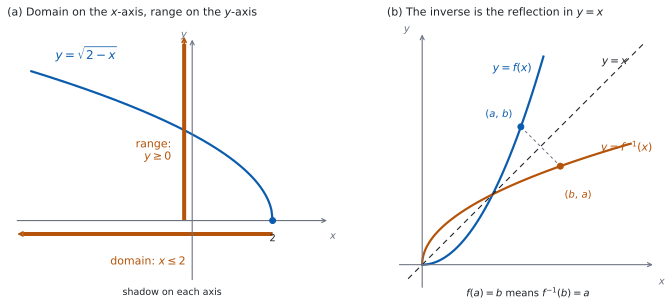

SL 2.2 — Functions, domain, range and the inverse function（関数・定義域・値域・逆関数）
- function（関数）とは何かを説明し、関数でないものと見分けられる。
- \(f(x)\)、\(v(t)\)、\(C(n)\) のような関数の書き方（function notation）を読み書きできる。
- domain（定義域）と range（値域）を、式からもグラフからも求められる。
- 関数を、現実の場面のモデルとして使える。
- inverse function（逆関数）\(f^{-1}\) が「\(f\) をもとに戻すもの」だと説明できる。
- \(y = f^{-1}(x)\) のグラフが、\(y = f(x)\) のグラフを \(y = x\) について折り返したものだと分かる。
The idea
1. 関数とは、入力 \(1\) つに出力 \(1\) つ
function（関数）とは、入力（input）\(1\) つに対して、出力（output）がちょうど \(1\) つ決まる対応のことです。
「ちょうど \(1\) つ」が要です。\(2\) つ出てきてもいけませんし、\(1\) つも出てこなくてもいけません。
| 対応 | 関数か | 理由 |
|---|---|---|
| \(x \mapsto 3x+1\) | 関数 | \(x\) を決めれば、値が \(1\) つ決まる |
| \(x \mapsto\)「\(2\) 乗すると \(x\) になる数」 | 関数ではない | \(x = 9\) で \(3\) と \(-3\) の \(2\) つ出る |
| \(x \mapsto \dfrac{1}{x}\) | \(x \neq 0\) なら関数 | \(x = 0\) では値が出ない |
表 1 の \(3\) 行目のように、\(1\) つも出てこない \(x\) があるときは、そこを domain から外します（第 3 節）。
グラフでは、縦線を引いて確かめられます。グラフに縦線（\(x =\) 定数）を引いたとき、\(2\) か所以上で交わるところがあれば、関数ではありません。\(1\) つの \(x\) に \(2\) つの \(y\) があるからです。これを vertical line test（縦線判定）と言います。
たとえば \(x^{2} + y^{2} = 1\)（円）は関数ではありません。\(x = 0\) のとき \(y = 1\) と \(y = -1\) の \(2\) つが出るからです。
2. 関数の書き方
シラバスは、\(f(x)\)、\(v(t)\)、\(C(n)\) のような書き方を挙げています。
\(f(x)\) は「\(f\) という関数に \(x\) を入れたときの出力」という意味です。文字の選び方は 表 2 のとおり、場面に合わせます。
\(f(3)\) と書いたら、\(f \times 3\) ではなく、\(x\) のところに \(3\) を入れた値です。
\(f(x) = 4x - 7\) なら、\(f(3) = 4(3) - 7 = 5\) です。
文字は \(f\) と \(x\) でなくてもかまいません。 場面に合わせて選びます。
| 書き方 | 読み方 | 場面 |
|---|---|---|
| \(f(x)\) | \(x\) の関数 \(f\) | 一般の関数 |
| \(v(t)\) | 時刻 \(t\) の関数 \(v\) | 速さが時刻で決まるとき |
| \(C(n)\) | 個数 \(n\) の関数 \(C\) | 費用が個数で決まるとき |
3. domain（定義域）
domain（定義域）とは、入力として使ってよい \(x\) 全体のことです。
domain の決まり方は \(2\) 通りあります。
(i) 問題文が指定する。 「for \(x \ge 0\)」のように書いてあれば、それが domain です。
(ii) 指定がなければ、式が意味をもつ最大の範囲。 シラバスにこう書かれています。
Unless otherwise stated, the domain will be the largest possible domain for which a function is defined.
公式集（formula booklet）の Topic 2 に印刷されているのは、2.1（直線の方程式と gradient formula）、2.6（軸の式）、2.7（解の公式と判別式）だけです。
2.2 の内容は、公式集には載っていません。 定義を覚えてください。
式が意味をもたなくなるのは、ふつう次の \(2\) つです。
| 見るところ | 条件 | 例 |
|---|---|---|
| 分母 | \(0\) にならないこと | \(\dfrac{1}{x-3}\) なら \(x \neq 3\) |
| 根号の中 | \(0\) 以上であること | \(\sqrt{2-x}\) なら \(2 - x \ge 0\)、つまり \(x \le 2\) |
シラバスも、\(f(x) = \sqrt{2-x}\) をそのまま例に挙げ、domain は \(x \le 2\)、range は \(f(x) \ge 0\) だとしています。
4. range（値域）
range（値域）とは、出力として実際に出てくる値全体のことです。
「\(y\) に何を入れてよいか」ではありません。 「\(x\) を domain の中で動かしたとき、\(f(x)\) がどこまで届くか」です。
\(f(x) = \sqrt{2-x}\) で見ます。
- 根号の値は負になりません。だから \(f(x) \ge 0\) です。
- \(x\) を小さくすれば \(2 - x\) はいくらでも大きくなるので、\(f(x)\) はいくらでも大きくなれます。
- \(x = 2\) のとき \(f(2) = 0\) なので、\(0\) も実際に出ます。
ですから range は \(f(x) \ge 0\) です。
\(0\) が実際に出るかどうかを確かめます。\(f(x) = \sqrt{2-x}\) では \(x = 2\) で \(0\) が出るので \(f(x) \ge 0\) です。
もし domain が \(x < 2\) と指定されていたら、\(0\) は出ないので range は \(f(x) > 0\) になります。domain を変えると、range も変わることがあります。 ただし、変わらないこともあります（\(f(x) = x^{2}+1\) は、domain が実数全体でも \(x \ge 0\) でも range は \(f(x) \ge 1\) のままです）。range は、そのつど domain から確かめ直してください。
5. グラフから domain と range を読む

図 1 の (a) が、その読み方です。(b) は逆関数の図で、第 7 節で使います。 いまは (a) だけを見てください。
| 求めるもの | 見るところ | 書き方 |
|---|---|---|
| domain | グラフを \(x\) 軸に落とした影 | \(x \le 2\) のように、\(x\) で書く |
| range | グラフを \(y\) 軸に落とした影 | \(f(x) \ge 0\) のように、\(f(x)\) か \(y\) で書く |
range の答えを「\(x \ge 0\)」と書いてしまう誤りが、とてもよく起こります。range は出力の話なので、\(f(x)\) か \(y\) で書いてください。
書き終えたら、自分の答えが入力の話か出力の話かを、もう一度読み返す習慣をつけてください。
6. 関数は、場面のモデルになる
シラバスは、関数を現実の場面のモデルとして使うことも求めています。
ポスターを \(n\) 枚刷る費用が \(C(n) = 45 + 3n\) ドルだとします。\(C(20) = 45 + 60 = 105\) ドルです。
\(45 + 3n\) という式だけを見れば、\(n\) にはどんな実数でも入れられます。しかし枚数としては、\(n\) は \(0\) 以上の整数でなければなりません。
式として定義できる範囲と、場面として意味のある範囲は別ものです。文章題では、場面のほうを答えます。
7. inverse function（逆関数）は、もとに戻す
inverse function（逆関数） \(f^{-1}\) は、\(f\) がしたことをもとに戻す関数です。
\(f(x) = 4x - 7\) で見ます。\(f(3) = 5\) でした。逆に、\(5\) から \(3\) に戻すのが \(f^{-1}\) です。（この \(f\) は、ちがう \(x\) からは必ずちがう値が出るので、戻し先が \(1\) つに決まります。この条件は、このあと one-to-one として整理します。）
\[ f(3) = 5 \qquad \Longleftrightarrow \qquad f^{-1}(5) = 3 \tag{1}\]
シラバスは、これを次の言い方でも書いています。
Solving \(f(x) = 10\) is equivalent to finding \(f^{-1}(10)\).
つまり「\(f(x) = 10\) を解く」ことと「\(f^{-1}(10)\) を求める」ことは、同じ作業です。\(f^{-1}\) の式を作らなくても、\(f^{-1}\) の値は求められます（\(f^{-1}(10)\) が欲しければ、\(f(x) = 10\) を解けばよいからです）。
逆関数がいつでもあるとは限りません。 シラバスにこう書かれています。
An inverse function exists for one-to-one functions.
one-to-one（\(1\) 対 \(1\)）とは、ちがう入力からは、必ずちがう出力が出るということです。\(f(x) = x^{2}\)（domain が実数全体）は \(f(3) = f(-3) = 9\) なので one-to-one ではなく、\(f^{-1}(9)\) が \(2\) 通りになってしまいます。これでは関数になりません。
domain と range は、そっくり入れかわります。 \(f^{-1}\) の domain は \(f\) の range であり、\(f^{-1}\) の range は \(f\) の domain です。
右上の \(-1\) は、指数ではなく「逆」の印です。
\(f(x) = 4x-7\) のとき、\(f^{-1}(5) = 3\) ですが、\(\dfrac{1}{f(5)} = \dfrac{1}{13}\) です。まったく別のものです。
グラフでは、\(y = f^{-1}(x)\) は \(y = f(x)\) を \(y = x\) について折り返したものになります（図 1 の (b)）。
TI-Nspire の Calculator 画面で Define f1(x)= に続けて \(\sqrt{3x-6}\) と入れて関数を定義しておくと、f1(5) と打つだけで値が出ます。根号は ctrl + x² のテンプレートで、見た目のまま入ります。文章題で同じ関数を何度も使うときに楽です。
Graphs 画面にそのまま f1(x) を入れれば、グラフから range の見当も付けられます。ただし、画面に見えている範囲がすべてではありません。 端の様子は、式に戻って確かめてください。
Paper 1 では使えません。 このページの例題と演習は、すべて手で解ける形にしてあります。
Why it works
なぜ、\(y = f^{-1}(x)\) のグラフは \(y = x\) について対称になるのでしょうか。
\(f(a) = b\) だとします。逆関数は、これをもとに戻すのですから \(f^{-1}(b) = a\) です（式 1）。
ここで、グラフの上の点として見ます。
- \(f(a) = b\) は、点 \((a, b)\) が \(y = f(x)\) のグラフの上にある、ということです。
- \(f^{-1}(b) = a\) は、点 \((b, a)\) が \(y = f^{-1}(x)\) のグラフの上にある、ということです。
つまり、座標を入れかえた点になります。 あとは、\((a,b)\) と \((b,a)\) が \(y = x\) について対称であることを見ればよいわけです。
\(a = b\) のときは、点 \((a,b)\) 自身が \(y = x\) の上にあり、折り返しても動きません。ですから、以下は \(a \neq b\) の場合を見ます。
このとき、\(2\) 点を結ぶ線分の傾きは
\[ \frac{a - b}{b - a} = -1 \]
です。\(y = x\) の傾きは \(1\) で、\(1 \times (-1) = -1\) ですから、この線分は \(y = x\) と垂直です（SL 2.1 の平行と垂直の条件です）。
また、\(2\) 点の中点は
\[ \left( \frac{a+b}{2}, \ \frac{b+a}{2} \right) \]
で、\(x\) 座標と \(y\) 座標が等しいので、\(y = x\) の上にあります。
垂直に交わり、中点が \(y = x\) の上にある。 これが「\(y = x\) について対称」ということです。
なぜ one-to-one でないと逆関数がないのでしょうか。 \(f(3) = f(-3) = 9\) のように、ちがう入力から同じ出力が出てしまうと、\(f^{-1}\) に \(9\) を入れたときの出力が \(3\) と \(-3\) の \(2\) つになってしまいます。入力 \(1\) つに出力 \(1\) つという第 1 節の条件を満たさないので、\(f^{-1}\) は関数になれないのです。
Worked examples
問題文は英語です。意味が理解できなかったら、問題文の下の「日本語訳」を開いてください。解説は日本語です。
例題も演習も、すべて電卓なしで解けます。 Paper 1 のつもりで解いてください。
例題 1 The function \(f\) is defined by \(f(x) = \sqrt{3x - 6}\).
(a) Find the domain of \(f\).
(b) Find the range of \(f\).
(c) Find \(f(5)\).
(d) Find the value of \(x\) for which \(f(x) = 6\).
日本語訳
関数 \(f\) は \(f(x) = \sqrt{3x-6}\) で定められています。
(a) \(f\) の定義域を求めなさい。
(b) \(f\) の値域を求めなさい。
(c) \(f(5)\) を求めなさい。
(d) \(f(x) = 6\) となる \(x\) の値を求めなさい。
(a) 根号の中が \(0\) 以上でなければなりません（表 3）。
\[ 3x - 6 \ge 0 \ \Rightarrow \ 3x \ge 6 \ \Rightarrow \ x \ge 2 \]
(b) 根号の値は負になりません。\(x\) を大きくすれば \(3x-6\) はいくらでも大きくなり、\(x = 2\) では \(0\) が出ます（第 4 節）。
\[ f(x) \ge 0 \]
(c) \(x\) に \(5\) を入れます。
\[ f(5) = \sqrt{3(5) - 6} = \sqrt{9} = 3 \]
(d) 両辺を \(2\) 乗します。
\[ 3x - 6 = 36 \ \Rightarrow \ 3x = 42 \ \Rightarrow \ x = 14 \]
検算（(a) について）。 domain の境目の外側で、実際に値が出ないことを見ます。 \(x = 1\) とすると \(3(1) - 6 = -3\) で、\(\sqrt{-3}\) は実数の値をもちません ✓ 境目の \(x = 2\) では \(\sqrt{0} = 0\) が出ます ✓
検算（(d) について）。 出した \(x\) を、もとの式に入れ直します。
\[ f(14) = \sqrt{3(14) - 6} = \sqrt{36} = 6 \]
\(6\) になりました ✓ \(2\) 乗した式ではなく、根号のある元の式に戻すのが要です。
(d) で \(2\) 乗を忘れて \(3x - 6 = 6\)、\(x = 4\) としていたら、\(f(4) = \sqrt{6}\) となり、\(6\) とは合いません。
(a) \(3x - 6 \ge 0\) \[x \ge 2\]
(b) \[f(x) \ge 0\]
(c) \[f(5) = \sqrt{9} = 3\]
(d) \(3x - 6 = 36\) \[x = 14\]
例題 2 The function \(f\) is defined by \(f(x) = 4x - 7\).
(a) Find \(f(3)\).
(b) Write down \(f^{-1}(5)\).
(c) Find the value of \(x\) for which \(f(x) = 21\).
(d) Hence write down \(f^{-1}(21)\).
日本語訳
関数 \(f\) は \(f(x) = 4x - 7\) で定められています。
(a) \(f(3)\) を求めなさい。
(b) \(f^{-1}(5)\) を書きなさい。
(c) \(f(x) = 21\) となる \(x\) の値を求めなさい。
(d) それを使って、\(f^{-1}(21)\) を書きなさい。
(a) \(x\) に \(3\) を入れます。
\[ f(3) = 4(3) - 7 = 12 - 7 = 5 \]
(b) (a) で \(f(3) = 5\) が出ています。\(f^{-1}\) はこれをもとに戻すのですから（式 1）、
\[ f^{-1}(5) = 3 \]
(c) 方程式を解きます。
\[ 4x - 7 = 21 \ \Rightarrow \ 4x = 28 \ \Rightarrow \ x = 7 \]
(d) Hence なので、(c) の結果をそのまま使います。\(f(7) = 21\) が分かったのですから、
\[ f^{-1}(21) = 7 \]
検算（(b) について）。 \(f^{-1}\) の値を、\(f\) に入れ直します。 \(f(3) = 4(3) - 7 = 5\) ✓ 逆関数の答えは、もとの関数に入れて確かめられます。 ただしこれは (a) を計算し直しているだけなので、見つけられるのは (a) の計算ちがいです。
検算（(c) と (d) について）。 (c) の答えを、もとの式に入れ直します。\(4(7) - 7 = 28 - 7 = 21\) ✓ (d) は (c) と同じ事実を左右から見たものなので、(d) だけを別に確かめることはできません。 シラバスの言う「\(f(x) = 10\) を解くことと \(f^{-1}(10)\) を求めることは同じ」が、ここに現れています。
別の角度から、大きさで見当を付けます。 \(f\) は \(x\) が増えると増えるので、入れる値が大きければ戻ってくる値も大きいはずです。\(21 > 5\) に対して \(f^{-1}(21) = 7 > 3 = f^{-1}(5)\) ✓
\(f^{-1}(5)\) を \(\dfrac{1}{f(5)} = \dfrac{1}{13}\) としていたら、意味が違います。\(-1\) は指数ではありません（第 7 節）。
(a) \[f(3) = 12 - 7 = 5\]
(b) \[f^{-1}(5) = 3\]
(c) \(4x - 7 = 21\) \[x = 7\]
(d) \[f^{-1}(21) = 7\]
例題 3 The function \(f\) is defined by \(f(x) = x^{2} + 1\), with domain \(x \in \mathbb{R}\).
(a) Find \(f(3)\) and \(f(-3)\).
(b) Explain why \(f\) does not have an inverse function.
The domain of \(f\) is now restricted to \(x \ge 0\).
(c) Find the range of \(f\).
(d) Hence write down \(f^{-1}(10)\).
日本語訳
関数 \(f\) は \(f(x) = x^{2} + 1\)（定義域は実数全体）で定められています。
(a) \(f(3)\) と \(f(-3)\) を求めなさい。
(b) \(f\) が逆関数をもたない理由を説明しなさい。
\(f\) の定義域を \(x \ge 0\) に制限します。
(c) \(f\) の値域を求めなさい。
(d) それを使って、\(f^{-1}(10)\) を書きなさい。
(a) それぞれ入れます。
\[ f(3) = 9 + 1 = 10, \qquad f(-3) = 9 + 1 = 10 \]
(b) Explain why なので、英語で理由を書きます。(a) の値をそのまま根拠に使えます。
試験ではこう書く
From part (a), \(f(3) = 10\) and \(f(-3) = 10\), so two different inputs give the same output and \(f\) is not one-to-one. An inverse function would have to send \(10\) back to a single input, but both \(3\) and \(-3\) would have to be that input. Since an inverse function must give exactly one output for each input, no inverse function exists.
（(a) より \(f(3) = 10\)、\(f(-3) = 10\) であり、ちがう \(2\) つの入力から同じ出力が出るので、\(f\) は \(1\) 対 \(1\) ではない。逆関数があるとすれば、\(10\) を \(1\) つの入力に戻さなければならないが、\(3\) と \(-3\) の両方がその入力になってしまう。逆関数も、入力 \(1\) つに出力 \(1\) つでなければならないので、逆関数は存在しない、という意味です。）
(c) \(x^{2}\) は負になりません。\(x = 0\) は domain の中にあり、そのとき \(x^{2} = 0\) が出ます。ですから
\[ f(x) \ge 1 \]
(d) Hence なので、(c) で調べた制限後の \(f\) で考えます。\(x \ge 0\) に限れば、\(x\) が大きくなるほど \(x^{2}+1\) も大きくなるので、ちがう \(2\) つの入力が同じ値になることはもうありません。制限後の \(f\) は one-to-one で、逆関数をもちます。また \(10 \ge 1\) なので、\(10\) は (c) の range の中にあり、\(f^{-1}(10)\) の値が確かに定まります。(a) より \(f(3) = 10\) で、\(3\) は \(x \ge 0\) の中にありますから
\[ f^{-1}(10) = 3 \]
この \(f\) は、domain が実数全体のときも range は \(f(x) \ge 1\) でした。\(x \ge 0\) に狭めても range は同じです。狭めた目的は range を変えることではなく、one-to-one にして逆関数をもたせることです。
検算（(c) について）。 境目の値が実際に出るかを見ます。 \(x = 0\) で \(f(0) = 1\) ✓ また、\(1\) より小さい値、たとえば \(f(x) = 0\) が出るとすると \(x^{2} = -1\) となり、実数の \(x\) はありません ✓
検算（(d) について）。 \(f^{-1}\) の値を \(f\) に入れ直します。\(f(3) = 10\) ✓ \(-3\) ではいけません。 制限した domain \(x \ge 0\) に入っていないからです。
(b) を「グラフが放物線だから」だけで済ませていたら、理由になっていません。ちがう入力から同じ出力が出る具体例を挙げるのが要です。
(a) \[f(3) = 10, \qquad f(-3) = 10\]
(b) \(f(3) = f(-3) = 10\), so \(f\) is not one-to-one and \(10\) cannot be sent back to a single input.
(c) \[f(x) \ge 1\]
(d) \[f^{-1}(10) = 3\]
例題 4 A tank is being emptied. The volume of water in the tank, in litres, after \(t\) minutes is \(V(t) = 120 - 8t\).
(a) Find \(V(5)\).
(b) Find the time at which the tank is empty.
(c) State the domain of \(V\) in this context.
(d) A student calculates \(V(20) = -40\) and says that the tank contains \(-40\) litres after \(20\) minutes. Comment on this statement.
日本語訳
あるタンクの水が抜かれています。\(t\) 分後のタンクの水の量は、リットルで \(V(t) = 120 - 8t\) です。
(a) \(V(5)\) を求めなさい。
(b) タンクが空になる時刻を求めなさい。
(c) この場面での \(V\) の定義域を述べなさい。
(d) ある生徒が \(V(20) = -40\) と計算し、\(20\) 分後にタンクには \(-40\) リットル入っていると言いました。この発言について述べなさい。
(a) \(t\) に \(5\) を入れます。
\[ V(5) = 120 - 8(5) = 120 - 40 = 80 \]
\(5\) 分後に \(80\) リットルです。
(b) 空になるのは \(V(t) = 0\) のときです。
\[ 120 - 8t = 0 \ \Rightarrow \ 8t = 120 \ \Rightarrow \ t = 15 \]
\(15\) 分後です。
(c) 時刻は負になりませんし、空になったあとはこの式が使えません（第 6 節）。
\[ 0 \le t \le 15 \]
(d) Comment on なので、英語で判断とその理由を書きます。
試験ではこう書く
The arithmetic is correct, but the conclusion is not. The expression \(120 - 8t\) only models the tank while there is still water in it, and from part (b) the tank is empty at \(t = 15\). The value \(t = 20\) lies outside the domain \(0 \le t \le 15\), so \(V(20)\) has no meaning in this context. A volume cannot be negative. The model simply stops applying at \(t = 15\); after that the tank stays empty, so the volume is \(0\) litres, not \(-40\) litres.
（計算そのものは正しいが、結論は正しくない。\(120-8t\) という式は、タンクに水が残っているあいだだけをモデルにしている。(b) より \(t = 15\) で空になる。\(t = 20\) は定義域 \(0 \le t \le 15\) の外なので、\(V(20)\) はこの場面では意味をもたない。体積は負にならない。このモデルは \(t = 15\) で役目を終える。それより後は現実にはタンクは空のままで、量は \(0\) リットルであって \(-40\) リットルではない、という意味です。）
検算（(a) について）。 別の見方でも出します。 \(1\) 分で \(8\) リットル減るので、\(5\) 分では \(40\) リットル減ります。\(120 - 40 = 80\) ✓
検算（(b) について）。 出した \(t\) を、もとの式に入れ直します。\(V(15) = 120 - 120 = 0\) ✓
検算（(c) について）。 (b) と同じ計算を繰り返しても検算にはなりません。範囲の外側で、場面として意味が壊れることを見ます。 \(t = -1\) は水を抜き始める前なので、この式では扱えません ✓ \(t = 20\) とすると \(V(20) = 120 - 160 = -40\) となり、水の量が負になってしまいます ✓ 意味をもつのは \(0 \le t \le 15\) だけです。
(a) \[V(5) = 120 - 40 = 80 \ \text{litres}\]
(b) \(120 - 8t = 0\) \[t = 15 \ \text{minutes}\]
(c) \[0 \le t \le 15\]
(d) The arithmetic is correct but \(t = 20\) is outside the domain \(0 \le t \le 15\), so \(V(20)\) has no meaning here. The tank is empty from \(t = 15\) onwards.
Common errors
\(f(3)\) は \(f \times 3\) ではなく、\(x\) に \(3\) を入れた値です（第 2 節）。
\(f(a+b)\) も \(f(a) + f(b)\) ではありません。かっこの中を、まるごと \(x\) の場所に入れます。
domain は \(x\) で、range は \(f(x)\) か \(y\) で書きます（表 4）。
答えを書き終えたら、それが入力の話か出力の話かを読み返してください。
見るところは、ふつう 分母と根号の中の \(2\) つです（表 3）。
\(\dfrac{1}{\sqrt{x+2}}\) のように両方あるときは、\(x + 2 \ge 0\) だけでは足りません。分母が \(0\) になってもいけないので \(x > -2\) です。
右上の \(-1\) は指数ではありません（第 7 節）。
迷ったら、\(f^{-1}\) は「もとに戻す」という言葉に置きかえて読んでください。
「負にならないから \(f(x) \ge 0\)」と書く前に、\(0\) が実際に出るかを確かめてください（第 4 節）。
\(x\) が動ける範囲は domain で決まっています。domain を見ずに range は書けません。 domain が変われば range も変わることがあります（変わらないこともあります）。
式としては何でも入れられても、枚数・人数は \(0\) 以上の整数、時間は負にならない、といった制限があります（第 6 節）。
in this context と書かれていたら、場面のほうの答えを求められています。
Exercises
各問題に、折りたたみが \(3\) つ付いています。日本語訳、解答例（答案用紙に書くべきこと。英語です）、解説（なぜそうなるか。日本語です）。
まず自分で解いて、次に解答例と見くらべてください。解説は、合わなかったときだけ開けば十分です。
1 The function \(f\) is defined by \(f(x) = 5x - 2\).
(a) Find \(f(4)\).
(b) Find the value of \(x\) for which \(f(x) = 13\).
日本語訳
関数 \(f\) は \(f(x) = 5x - 2\) で定められています。
(a) \(f(4)\) を求めなさい。
(b) \(f(x) = 13\) となる \(x\) の値を求めなさい。
(a) \[f(4) = 20 - 2 = 18\]
(b) \(5x - 2 = 13\) \[x = 3\]
(a) は代入、(b) は方程式です。同じ式を、左から読むか右から読むかの違いです（第 7 節）。
検算（(b) について）。 出した \(x\) を、もとの式に入れ直します。\(5(3) - 2 = 13\) ✓
大きさの見当も付きます。 \(f(4) = 18\) で、\(13\) はそれより小さい。\(f\) は \(x\) が増えると増えるので、答えは \(4\) より小さいはずです。\(3 < 4\) ✓
2 Find the domain of the function \(g(x) = \dfrac{1}{x+4}\).
日本語訳
関数 \(g(x) = \dfrac{1}{x+4}\) の定義域を求めなさい。
The denominator must not be zero: \(x + 4 \neq 0\)
\[x \neq -4\]
分母が \(0\) になる \(x\) だけを外します（表 3）。指定がないので、それ以外はすべて入ります。
検算。 外した値のすぐ両側で、値が出ることを見ます。\(x = -3\) なら \(g(-3) = \dfrac{1}{1} = 1\) ✓ \(x = -5\) なら \(g(-5) = \dfrac{1}{-1} = -1\) ✓ \(x = -4\) だけが \(\dfrac{1}{0}\) になり、値をもちません ✓
「\(x > -4\)」と書いていたら、\(-4\) より小さい値まで外してしまっています。外すのは \(1\) 点だけです。
3 Find the domain of the function \(h(x) = \sqrt{2x + 6}\).
日本語訳
関数 \(h(x) = \sqrt{2x + 6}\) の定義域を求めなさい。
\[2x + 6 \ge 0\]
\[x \ge -3\]
根号の中が \(0\) 以上、という条件です。\(2x \ge -6\) の両辺を \(2\) で割ります。割るのが正の数なので、ここでは不等号の向きは変わりません（負の数で割るときは変わります。演習 \(10\) を見てください）。
検算。 境目の外側で、値が出ないことを見ます。\(x = -4\) なら \(2(-4) + 6 = -2\) で、\(\sqrt{-2}\) は実数の値をもちません ✓ 境目の \(x = -3\) では \(\sqrt{0} = 0\) が出ます ✓
符号の見当も付きます。 \(2x + 6\) は \(x\) が増えると増えるので、条件を満たすのは「ある値以上」の側です ✓
4 The function \(f\) is defined by \(f(x) = x^{2} - 3\), with domain \(x \ge 0\). Find the range of \(f\).
日本語訳
関数 \(f\) は \(f(x) = x^{2} - 3\)（定義域は \(x \ge 0\)）で定められています。\(f\) の値域を求めなさい。
For \(x \ge 0\), \(x^{2} \ge 0\), and \(x^{2} = 0\) when \(x = 0\).
\[f(x) \ge -3\]
5 The function \(f\) is defined by \(f(x) = 2x + 9\). Find \(f^{-1}(15)\).
日本語訳
関数 \(f\) は \(f(x) = 2x + 9\) で定められています。\(f^{-1}(15)\) を求めなさい。
\[2x + 9 = 15\]
\[f^{-1}(15) = 3\]
6 The cost, in dollars, of hiring a hall for \(n\) hours is \(C(n) = 60 + 5n\).
(a) Find \(C(12)\).
(b) Find the number of hours for which the cost is \(\$210\).
日本語訳
ホールを \(n\) 時間借りる費用は、ドルで \(C(n) = 60 + 5n\) です。
(a) \(C(12)\) を求めなさい。
(b) 費用が \(\$210\) になる時間数を求めなさい。
(a) \[C(12) = 60 + 60 = 120\]
(b) \(60 + 5n = 210\) \[n = 30\]
(a) は代入、(b) は方程式です（第 6 節）。
検算（(b) について）。 出した値を、もとの式に入れ直します。\(C(30) = 60 + 150 = 210\) ✓
別の道でも出します。 \(60\) ドルは時間によらずかかる分なので、時間で決まるのは \(210 - 60 = 150\) ドルです。\(1\) 時間あたり \(5\) ドルですから \(150 \div 5 = 30\) 時間 ✓
\(12\) 時間で \(120\) ドルだったから、\(210\) ドルはその \(1.75\) 倍で \(21\) 時間、とはなりません。 \(60\) ドルの固定分があるので、費用と時間は比例していません。
7 The function \(f\) is defined by \(f(x) = \sqrt{x - 1}\). Find the domain and the range of \(f\).
日本語訳
関数 \(f\) は \(f(x) = \sqrt{x-1}\) で定められています。\(f\) の定義域と値域を求めなさい。
Domain: \(x - 1 \ge 0\) \[x \ge 1\]
Range: \[f(x) \ge 0\]
domain は根号の中の条件から、range は根号の値の性質からです（第 3 節、第 4 節）。
検算（domain について）。 \(x = 0\) とすると \(\sqrt{-1}\) で、実数の値をもちません ✓ \(x = 1\) では \(\sqrt{0} = 0\) が出ます ✓
検算（range について）。 \(0\) が実際に出るかを見ます。\(x = 1\) で \(f(1) = 0\) ✓ また、大きい値も出ます。\(f(5) = \sqrt{4} = 2\)、\(f(10) = 3\) ✓
domain と range で、文字を書き分けてください。 片方は \(x\)、もう片方は \(f(x)\) です。
8 The function \(f\) has an inverse function, and \(f(2) = 7\).
(a) Write down \(f^{-1}(7)\).
(b) Write down the coordinates of a point on the graph of \(y = f^{-1}(x)\).
日本語訳
関数 \(f\) は逆関数をもち、\(f(2) = 7\) です。
(a) \(f^{-1}(7)\) を書きなさい。
(b) \(y = f^{-1}(x)\) のグラフ上の点の座標を \(1\) つ書きなさい。
(a) \[f^{-1}(7) = 2\]
(b) \[(7, \ 2)\]
9 The function \(f\) is defined by \(f(x) = (x-3)^{2}\), with domain \(x \in \mathbb{R}\).
(a) Find \(f(1)\) and \(f(5)\).
(b) Explain why \(f\) does not have an inverse function.
日本語訳
関数 \(f\) は \(f(x) = (x-3)^{2}\)（定義域は実数全体）で定められています。
(a) \(f(1)\) と \(f(5)\) を求めなさい。
(b) \(f\) が逆関数をもたない理由を説明しなさい。
(a) \[f(1) = (-2)^{2} = 4, \qquad f(5) = 2^{2} = 4\]
(b) \(f(1) = f(5) = 4\), so two different inputs give the same output and \(f\) is not one-to-one. An inverse function would have to send \(4\) back to a single input, so no inverse function exists.
(a) かっこの中を先に計算します。\(1 - 3 = -2\) で、\((-2)^{2} = 4\) です。負の数の \(2\) 乗は正になります。
(b) Explain why なので、(a) で見つけた具体例をそのまま根拠に使います（第 7 節）。
数は \(1\) と \(5\) でなくてもかまいません。同じ値になる、ちがう \(2\) つの入力が \(1\) 組あれば十分です。\(x = 3\) から左右に同じだけ離れた \(2\) 数なら、いつでも同じ値になります。
検算。 挙げた \(2\) 数が、本当に同じ値になるかを確かめます。\(f(1) = 4\)、\(f(5) = 4\) ✓ しかも \(1 \neq 5\) ✓ この \(2\) つがそろって、はじめて理由になります。
別の組でも確かめられます。 \(f(2) = (-1)^{2} = 1\)、\(f(4) = 1^{2} = 1\) ✓ 同じ値になる組は \(1\) 組だけではありません。
「グラフが放物線だから」だけでは、理由になりません。 なぜ放物線だと困るのかまで書いてください。
試験ではこう書く
From part (a), \(f(1) = 4\) and \(f(5) = 4\), so two different inputs give the same output and \(f\) is not one-to-one. An inverse function would have to send \(4\) back to a single input, but both \(1\) and \(5\) would have to be that input, so \(f\) has no inverse function on this domain.
10 A student is asked to find the domain of \(f(x) = \sqrt{5 - x}\), and writes
\[ 5 - x \ge 0, \qquad x \ge 5 \]
Identify the error in the student’s work, and write down the correct domain.
日本語訳
ある生徒が、\(f(x) = \sqrt{5-x}\) の定義域を求めるように言われ、上のように書きました。
生徒の計算の誤りを指摘し、正しい定義域を書きなさい。
The student did not reverse the inequality sign when dividing by \(-1\).
\[-x \ge -5, \qquad x \le 5\]
Identify the error なので、どこが違うのかを名指ししてから、正しい答えを書きます。
\(5 - x \ge 0\) から \(-x \ge -5\) です。ここで両辺を \(-1\) で割る（または \(-1\) を掛ける）ので、不等号の向きが変わります。
検算。 生徒の答えと正しい答えを、それぞれ式に入れて比べます。\(x = 6\) は生徒の範囲に入っていますが、\(\sqrt{5-6} = \sqrt{-1}\) となり値が出ません ✓ \(x = 0\) は生徒の範囲の外ですが、\(\sqrt{5}\) という値が出ます ✓ どちらの向きが正しいかは、\(1\) つ入れてみれば決まります。
負の数で割ると向きが変わるのは、不等式の扱いでいちばん多い誤りです。割ったあとに、値を \(1\) つ入れて確かめる習慣をつけてください。
試験ではこう書く
The error is in the last step: dividing both sides of \(-x \ge -5\) by \(-1\) reverses the inequality sign, but the student kept it the same. The correct domain is \(x \le 5\).